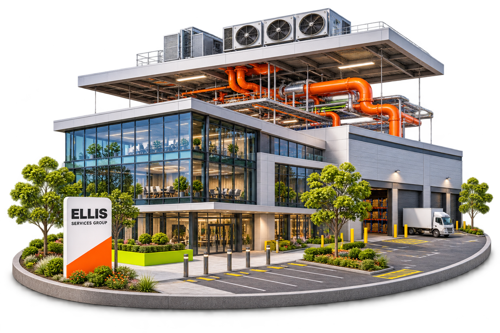
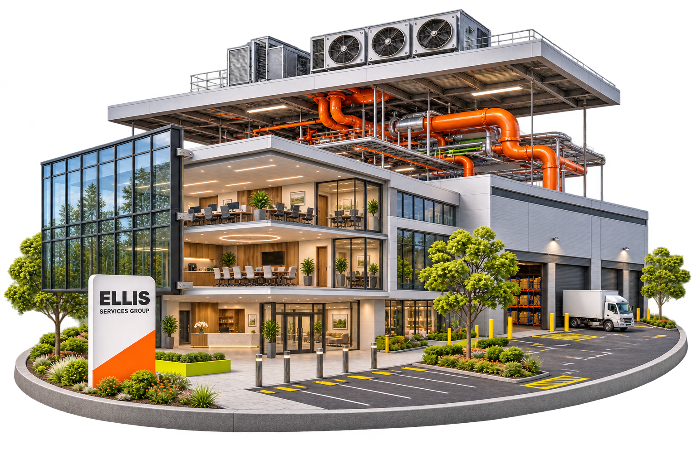
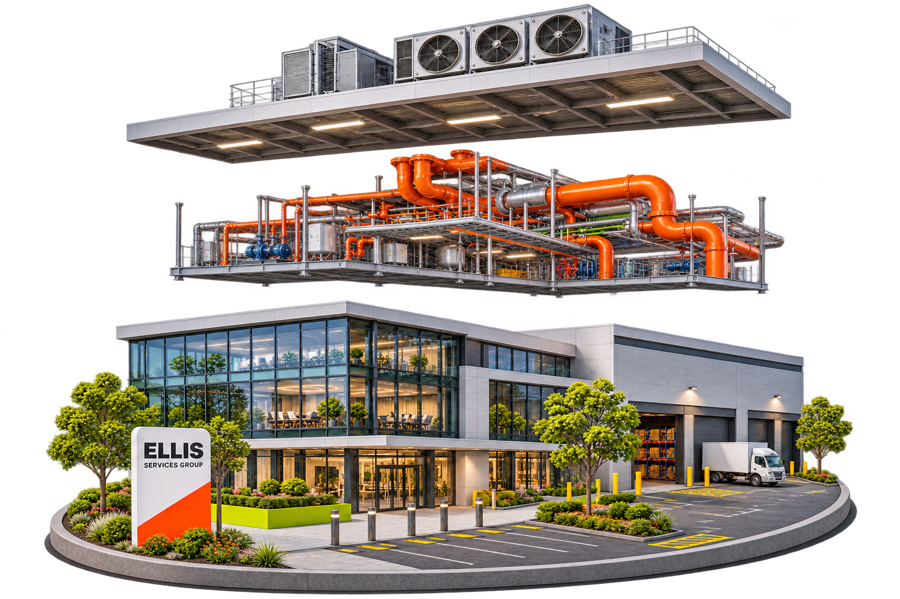
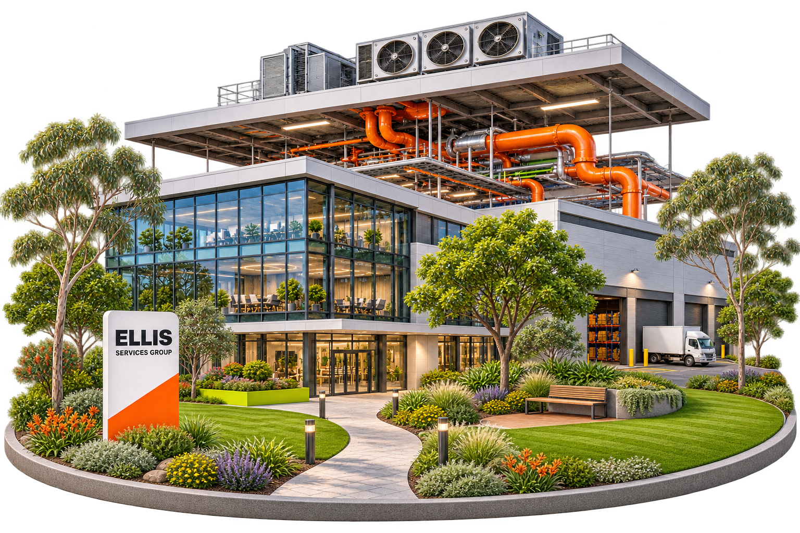

Melbourne / 墨尔本
一个团队。照顾每个细节。
墨尔本商业物业维护与维修
我们为墨尔本的商业物业提供建筑维修、空调水电、设备系统、园林绿化、广告标识及外立面高空清洁，统筹单项维修、定期维护与多工种施工。
单项维修 · 定期维护 · 多工种工程
Melbourne / 墨尔本
一个团队。照顾每个细节。
我们为墨尔本的商业物业提供建筑维修、空调水电、设备系统、园林绿化、广告标识及外立面高空清洁，统筹单项维修、定期维护与多工种施工。
建筑与室内
屋顶、防水、墙面、门窗、地面、木工与室内翻新。把分散的维修工作，纳入完整的物业安排。
设备与楼宇系统
空调、通风、水电、设备维护，以及消防、安防与门禁协调。结合设备和现场运营，协调对应工种与维护工作。
场地、品牌与环境
园林、标识、外立面、停车场与商业清洁。让建筑内外的维护工作连成整体。




建筑示意暂不可用，服务内容可继续浏览。
我们的服务 / MELBOURNE
墙体 · 门窗 · 地面 · 木工
屋面 · 排水槽 · 防水 · 渗漏
配电 · 灯具 · 线路 · 电力
供水 · 排污 · 热水 · 燃气
空调 · 通风 · 制冷 · 设备
消防 · 监控 · 自动门 · 门禁
草坪 · 植栽 · 灌溉 · 场地
店招 · 灯箱 · 导视 · 品牌
玻璃 · 外墙 · 高空 · 清洗
日常清洁 · 深度清洁 · 环境
地坪 · 划线 · 围栏 · 道路
装修 · 改造 · 翻新 · 退租恢复
一个项目，需要多个工种？交给我们统筹安排。
02 /商业种类
继续向下滚动，
探索我们服务的商业场所。
服务地区 / SERVICE AREAS
选择所在大区，查看商业维修与维护服务。
04 / 新闻与见解
关于商业物业、日常维护和场地更新的实用思路。
05 / 项目问答
可以。我们按项目范围统筹对应工种，明确进场顺序与施工安排。
我们先确认营业时段、可进入区域及现场条件，再沟通分区作业、施工时段和工种顺序，明确需要配合的安排。
两种都接受。我们承接单次维修、翻新及设备更新，也可根据物业需求制定持续维护安排。
06 / 关于 ELLIS
MELBOURNE · COMMERCIAL SERVICESABN 96 645 821 745 · ACN 645 821 745 · VIC 3030, Australia
COMPANY REGISTRATION
登记信息核对于 2026 年 11 月 13 日
位置与联系
查看我们的商家位置，或通过电话和邮件与我们联系。
位置以我们的 Google 商家地图为准。到访前请先电话联系确认。
07 / 项目咨询
告诉我们物业位置、需要处理的事项和期望时间，现场照片也可以一起提供。
物业位置、维修事项、期望时间，现场照片可选。
了解现场条件，明确工作范围与报价。
确认后协调工种、进场时间与施工顺序。